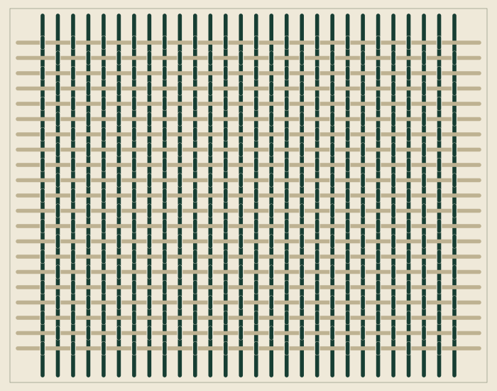
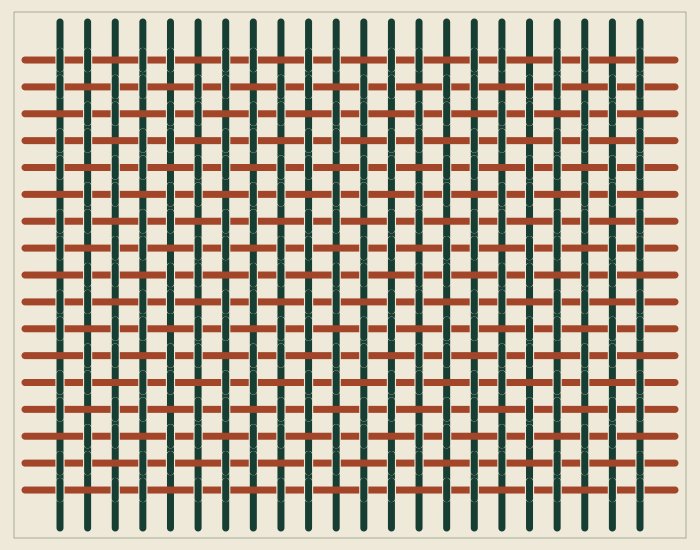
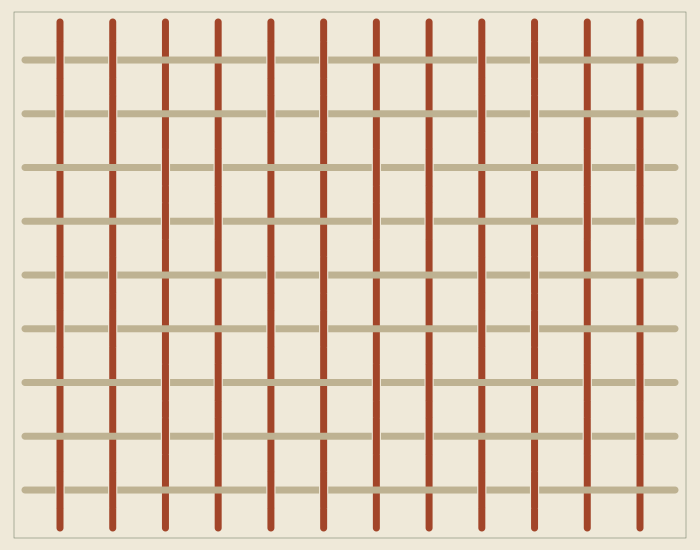

01 / PLAIN
Small, even repeats.
Plain weave: each weft thread passes over one warp thread and under the next.
Textile design workshop
Graphic weaving studies
PATTERN MAKING STUDIO
Pick a density, two thread colours and one of three weaves, then save it as an SVG file.
SETTINGS SHEET / 02
A self-contained vector file with no external resources.
05 / ENQUIRY DRAFT
A summary is prepared here. Your choices are not sent anywhere.
03 / THREE STUDIES
Load one into the trial, then change any setting.

Plain weave: each weft thread passes over one warp thread and under the next.

A shifted run of threads creates movement, even though the sample itself stays still.

Basket weave: threads run in pairs, with more linen showing between them.
04 / PROCESS
Start with two colours you want to see side by side.
Density changes the number of threads; the weave decides which direction shows on top.
Download the vector file and copy the settings for your next conversation.